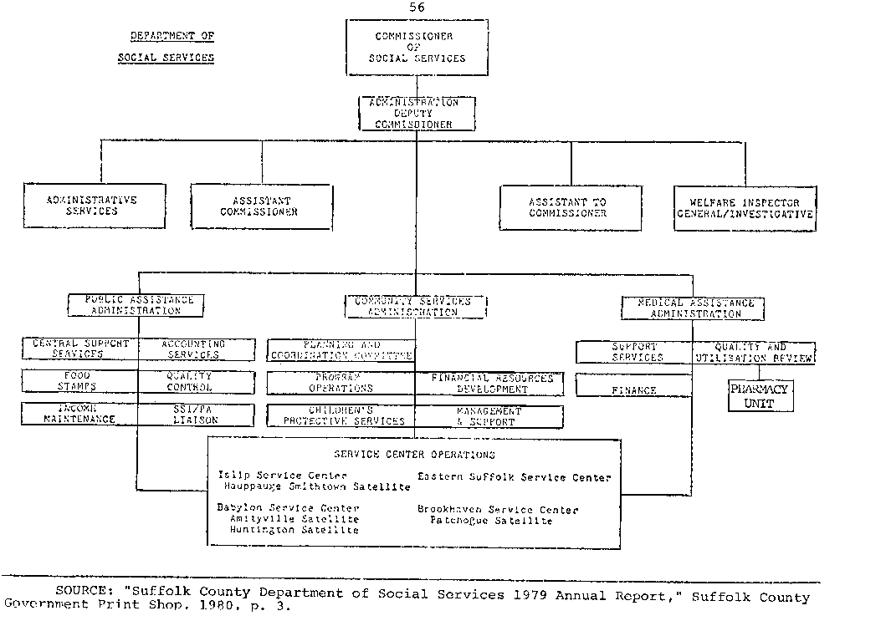
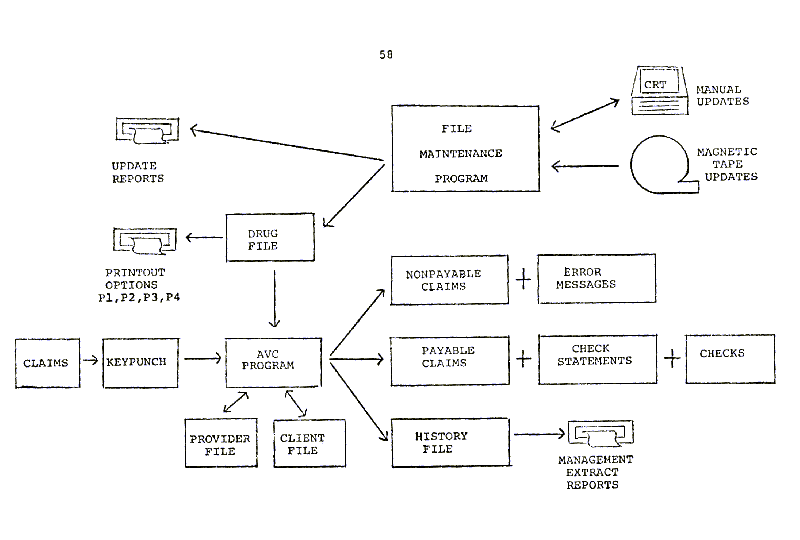

Please excuse the mess, this page is still under construction, but feel free to read on.
THE SUFFOLK COUNTY MEDICAID
PHARMACY MANAGEMENT INFORMATION SUBSYSTEM
By
Michael J. Lubrano, Jr.
A thesis presented to the faculty of the Graduate School of Health Care and Public Administration, Long Island University, in partial fullfillment of the requirements for the degree of Master of Public Administration.
Department of Health Care and Public Administration
C. W. Post Center
Long Island University
Greenvale, NY 11548
May, 1981
[Back to Top] [INTRODUCTION] [Conclusion] [ENDNOTES] [End of Thesis]

TABLE OF CONTENTS
INTRODUCTION . . . . . . . . . . . . . . . . . . . . . . . . . . . . . . . . . . . 1
Chapter
I. THE OBJECTIVES . . . . . . . . . . . . . . . . . . . . . . . . . . . . . . 4
Medical Assistance Goals
Management Information System Concepts
II. BACKGROUND INFORMATION . . . . . . . . . . . . . . . . . 12
The Manual System
Program Alternatives
III. DEVELOPMENT OF THE PMIS . . . . . . . . . . . . . . . . . 29
The Model System
The New Design
The Reporting System
IV. A SECOND ANALYSIS . . . . . . . . . . . . . . . . . . . . . . . . . 40
Governmental Behavior
PMIS Behavioral Analysis
Conclusion
. . . . . . . . . . . . . . . . . . . . . . . . . . . . . . . . . . . . . . . . . . . . . . . . . . . .
APPENDIX . . . . . . . . . . . . . . . . . . . . . . . . . . . . . . . . . . . . . . . 52
ENDNOTES . . . . . . . . . . . . . . . . . . . . . . . . . . . . . . . . . . . . . . 63
BIBLIOGRAPHY . . . . . . . . . . . . . . . . . . . . . . . . . . . . . . . . . 68
By December 1975, the Suffolk County unemployment rate reached 9.7 percent. There were over 18,000 public assistance cases; up 3,300 cases or 22.4 percent from December 1974. This represented 57,300 adults and children on public assistance. The total eligible Medicaid population, which includes both public assistance and non-public assistance cases, increased from 72,847 in December 1974 to 80,485 in December 1975; an increase of over 7,600 cases or 10.5 percent.
1
The 1976 Suffolk County Budget of $535 million could not by itself have supported the $201 million or 38 percent to be spent by Social Services.
2
Since Medicaid expenditures alone represented $89.1 million in 1976, a major effort had to directed toward cost containment procedures for medical assistance.
3
Although the reimbursement varies between programs, on the average Suffolk County receives fifty percent Federal and twenty-five percent State aid.
4
Even though the majority of this money is transferred back into the local economy through recipient purchases and medical bills paid by Medicaid, the locality is still mandated to spend more than it receives in transfer payments. The local taxpayers must therefore, both directly and indirectly carry this tax burden. The fact that there is a multiplier effect working to benefit the local economy was of little consolation and Suffolk County realized that some very serious consideration would have to be given toward the containment of Medicaid expenditures.
5
[Back to Top]
[ENDNOTES]
[End of Thesis]
In addition to these fiscal problems, the Suffolk County Medicaid program was also faced by a continual increase in the number of claims submitted for Medicaid services. It was therefore hoped that the automated Monroe County Model Medicaid System could be used in Suffolk County to handle the growing claims volume. Although most of the medical and dental services would continue to require manual review in the model system, it was believed that the automated drug price file could be used to process the majority of drug claims. Since drug claims represented nearly half the total Medicaid claims volume, and drug expenditures increased by eleven percent in 1974 to $3.5 million, it was hoped that the Model System would offer some much needed relief for the strain being placed upon the manual pharmacy system which existed at that time.
6
The primary question facing the Medical Assistance Pharmacy Unit was whether or not it would be possible to implement and maintain an effective automated pharmacy program at the local county government level. This study will therefore be concerned primarily with the development of the current pharmacy management information subsystem. It will try to show that the current program fulfills both the objectives of a Management Information System (MIS) and the objectives of the Suffolk County Medical Assistance Administration (MAA) by emphasizing the influence the system has had upon: (1) cost containment, (2) claims processing, and (3) the availability of program information.
The beginning chapter will present overall objectives and will be divided into two main sections. The first section will present the goals and legal mandates governing the medical assistance program. The second section of the chapter will be concerned with the definitions and concepts of management information systems.
The Suffolk County Department of Social Services was created under the County Charter and the New York State Social Services Law. The Department must function within the guidelines of the Federal Social Security Act of 1935 and its amendments. It also comes under the jurisdiction of the United States Department of Health and Human Services, and the New York State Department of Social Services.
1
Within the Department of Social Services, the Medicaid Program is designed to provide comprehensive health care for needy persons who are unable to purchase such care for themselves. The Medical Assistance (MA) Division functions pursuant to Title XIX of the Social Security Act; Title XVIII of the New York Codes, Rules and Regulations, Section 515; the New York State Medical Handbook; and the Medical Assistance Contract with the New York State Department of Health.
2
Combined, these laws define the Medicaid Program's scope of services and eligible population. Since failure to follow these regulations would result in the loss of Federal and State reimbursement to the County, it can readily be seen how important it is to adhere to these mandates so that maximum reimbursement can be obtained. The use of federal and state funding requires these programs to be implemented in conformity with the original guidelines. The possibility of a reduction in the reimbursement rate or the application of penalty charges is used as a lever to assure such conformity, especially since these programs would not be possible without the larger tax resources of the federal and state governments. Local districts may not propose alternatives to minimize the cost of medical care by simply writing new policy, since it is not possible at the local level to reduce either the program's scope of service or the groups eligible for participation. Changes of this nature require either federal or state enabling legislation and adjustments in the state plan.
3
[Back to Top]
[ENDNOTES]
[End of Thesis]
In Suffolk County, both social and health aspects of the New York State Program of Medical Assistance for Needy Persons, more commonly called the Medical Assistance (Medicaid) Program, are joined in one Medical Assistance Administration (MAA). This Medical Assistance Administration is charged with the responsibility to interpret and implement the laws, regulations and policies mentioned in the preceding section. MAA is therefore responsible for seeing that appropriate high quality health care is available to Medicaid eligible persons at the lowest possible cost and with a minimum of administrative delay.
4
The Quality Utilization Review (QUR) section of MAA is specifically responsible for reviewing the quality of medical care and monitoring reimbursements. I must also take full advantage of cost containment procedures to help alleviate he financial burden of these mandated services. Within QUR, the pharmacy unit reviews pharmaceutical services supplied to non-institutionalized Medicaid clients and monitors reimbursements for these services.
5
The Pharmacy unit is responsible for the supervision and coordination of the manual review and system maintenance procedures of pharmacy claims. It participates in setting local policies and procedures, monitors services, prepares notices, and reports on all pharmacy activities. This unit acts as liaison with pharmacy providers, other health care providers, professional organizations, public officials, Medicaid clients and the general public. In order to fulfill these responsibilities, the pharmacy unit requires program information for its decision-making functions. The following section of this chapter will therefore be devoted to describing how and why the MIS concept was developed to fulfill this need.
Leon K. Albrecht defines a business information system as "one that captures, gathers, classifies, manipulates, and disseminates business information."
6
Joel E. Ross, however, states that:


ENDNOTES
INTRODUCTION
1 Suffolk County Department of Social Services 1975 Annual Report, Suffolk County Government Print Shop, 1976, pp.1-15.
2 County of Suffolk New York Adopted Budget 1976, Suffolk County Government Print Shop, 1976, pp.XXIII-594.
3 County of Suffolk New York Tentative Budget 1978 Volume I Summary, Suffolk County Government Print Shop, 1978, p.8.
4Refer to pages 52-55 of the Appendix for charts indicating funding sources for the Department of Social Services 1976 to 1979, and Medical Assistance expenditures for 1977 to 1979.
5The multiplier theory states that national income will rise as a result of an incremental increase of net investment or as a result of an injection of new money by the government into the income stream and the total sum will exceed the original disbursement. For further information the reader is referred to John Maynard Keynes, The General Theory of Employment, Interest and Money (New York: Harbinger, 1964) and Hugo Hegeland, The Multiplier Theory (New York: A. M. Kelley, 1966).
6 Suffolk County Department of Social Services 1974 Report, Suffolk County Government Print Shop, 1975, pp.14-15.
CHAPTER I
1 1975 Annual Report, p.2.
2 1978 Annual Report, p.17.
3 1975 Annual Report, p.2.
4 1978 Annual Report, p.17.
5Refer to page 56 of the Appendix for the Department of Social Services organizational chart.
6Leon K. Albrecht, Organization and Management of Information Processing Systems (New York: The Macmillan Company, 1973), p.3.
7Joel E. Ross, Modern Management and Information Systems (Virginia: Reston Publishing Company, Inc., 1976), pp.9-51.
8Edley W. Martin, Jr., and William C. Perkins, Computers and Information Systems: An Introduction (Illinois: Irwin and Dorsey Press, 1973), pp.41-45.
9Donald H. Sanders, Computers and Management in a Changing Society, 2d ed. (New York: McGraw-Hill Book Company, 1974), pp.4-63.
10Jerome Kanter, Management-Oriented Management Information Systems (New Jersey: Prentice-Hall, Inc., 1972), p.1.
11Donald F. Heany, Development of Information Systems: What Management Needs to Know (New York: The Ronald Press Company, 1968), pp.7-8.
12Martins and Perkins, pp.13-23.
13Heany, p.92.
14Ross, pp.5-8.
CHAPTER II
1 1975 Annual Report, p.2.
2Robert D. Lee, Jr., and Ronald W. Johnson, Public Budgeting Systems, 2d ed. (Baltimore: University Park Press, 1977), pp.309-10.
3Ibid., p.287.
4Ibid., p.283.
5Robert Heller, The Great Executive Dream (New York: Dell Publishing Co., Inc., 1972), p.167.
6 Annual Pharmacy Report for 1979, Suffolk County Government Print Shop, 1980, p.7.
7 Annual Pharmacy Report for 1976, Suffolk County Government Print Shop, 1977, p.1.
8Thomas P. Lauth, Zero-Base Budgeting in Georgia State Government: Myth and Reality, Public Administration Review (September/October 1978), p.426.
9 Rx Prices and Sizes Increase, New York State Pharmacist (June 1977), p.9.
10 Suffolk County Department of Social Services 1974 Annual Report, Suffolk County Government Print Shop, 1974, p.15.
11Suffolk County, Legislature, Committee on Legislative Finance. A Resolution for a Formulary Plan for Pharmaceutical Services within the Suffolk County Medicaid Program, Suffolk County Government Print Shop, 1977.
12New York State Education Law (1977), Title VIII, Article 137 Section 6816.
13 Efforts Underway to Scuttle DPS Legislation, Apharmacy Weekly, vol. 16, no. 11 (March 12, 1977), p.1.
14 The Lilly Digest: A Preview of Community Pharmacy-1975, New York State Pharmacist (June 1976), pp.24-26.
15William Kroger, Contracting Out, One Way To Shrink Government Employment, Nation s Business (December 1977), pp.39-42.
16Carl E. Lutrin, and Allen K. Settle, American Public Administration: Concepts and Cases (California: Mayfield Publishing Company, 1976), p.131.
17Lee and Johnson, pp.1-20.
18 1975 Annual Report, p.16.
19John Jennrich, Putting Health Care Costs Under A Microscope, Nation s Business (November 1978), pp.77-85.
20Marvin C. Meyer, Herbert Bates, Jr., and Robert G. Swift, The Rose of State Formularies, Journal of the American Pharmaceutical Association, vol. n.s. 14, no. 12 (December 1974), p.665.
21Ibid., p.666.
22Martin and Perkins, pp.12-14.
CHAPTER III
1Kanter, p.143. Applicaton software is the order processing or inventory control system end product; the system software is tied directly to the computer to assist the programmer in translating applications into machine language, and the operations group in scheduling and running the computer efficiently.
2Heller, p.295.
3George E. Berkley, The Craft of Public Administration, (Boston: Allyn and Bacon, Inc., 1975), pp.363-65.
4Sanders, pp.260-61.
5Ross, p.20.
6William V. Haney, Communication and Organizational Behavior Text and Cases, 3d ed. (Illinois: Richard D. Irwin, Inc., 1973), pp.299-392.
7Arthur Block, Murphy s Law and other reasons why things go wrong! (California: Price/Stern/Sloan Publishers, Inc., 1977), p.11.
8Ibid., p.19.
9Refer to page 61 of the Appendix for chart showing drug price file maintenance report.
10Heany, p.102.
11Sanders, pp.434-37.
12Refer to page 58 of the Appendix for chart indicating the system design.
13New York State, Chapter 77 of the Laws of 1977, 10 NYCRR 85.25.
14Refer to page 57 of the Appendix for a copy of a page from the price file listing.
15Refer to page 60 of the Appendix for chart indicating drug claim statistics.
16Refer to page 62 of the Appendix for a copy of the QUR/DP EXTRACT REQUEST form.
17Kanter, p.81.
18Refer to page 59 of the Appendix for chart indicating Pharmacy expenditures.
19Refer to page 60 of the Appendix for chart indicating drug claim statistics.
20Ross, p.27.
CHAPTER IV
1Lee and Johnson, p.16.
2E. S. Quade, Analysis for Public Decisions (New York: American Elsevier Publishing Co., Inc., 1975) pp.3-13.
3Graham T. Allison, Essence of Decision, Explaining the Cuban Missle Crisis (Boston: Little, Brown and Co., 1971), pp.10-38.
4Ibid., pp.67-100.
5Charles E. Lindblom, Still Muddling, Not Yet Through, Public Administration Review (November/December 1979), p.519.
6Charles E. Lindblom, The Science of Muddling Through, Public Administration Review 19 (1959) : 209-10.
7Ibid.
8Lindblom, Still Muddling, Not Yet Through, pp.522-24.
9Francis E. Rourke, Bureaucracy, Politics, and Public Policy, 2d ed. (Boston: Little, Brown and Co., 1969), pp.81-90.
10Allison, p.176.
11Ibid., pp.144-178.
12Ross, p.21.
13Sanders, p.170.
[Back to Top]
[INTRODUCTION]
[ENDNOTES]
[End of Thesis]
Why should anyone read this document?
This document may help increase business efficiency and efficacy by explaining why things are the way they are! For more information on how to help speed your cash flow while saving valuable staff time visit M.J.L. Computer Enterprises, Inc. MJL Computers has several modules and databases available that can be customized to fit your needs. MJL Computers will adapt their program(s) to your business needs as opposed to so-called "canned packages," "turn key programs," "store bought," or "off-the-shelf programs" that require your business to conform to their program limitations. For Example: The Patient Profiler(tm) can track your patients, clients, insurance plans, addresses, telephone numbers, etc. It can also create, print and save customized lists that can to be used and reused to create, print and save recurring (weekly, monthly, quarterly, etc.) reports. Other customized reports can also be developed to monitor and supply specific information in formats that can be useful to your business and patient care.
[Back to Top] [INTRODUCTION] [ENDNOTES] [End of Thesis]
This "Thesis" is protected by copyright.
Copyright (c) 1981 Michael J. Lubrano, Jr. All rights reserved. All data and information is protected under all applicable copyright laws. No use of any data or information is permitted in any form or manner without express written consent from Dr. Michael J. Lubrano, Jr.
[Back to Top] [INTRODUCTION] [ENDNOTES] [End of Thesis]
Does this program contain disclaimers?
The author and distributors of this document assume no responsibility for its suitability or use. It is presented 'as-is' without warranty of any kind, either expressed or implied, including but not limited to the warranties of merchantability and/or fitness for a particular purpose.
[Back to Top] [INTRODUCTION] [ENDNOTES] [End of Thesis]
Can I contact MJL Computers by email or telephone?
Technical support is available by clicking on the Online Help Link, by calling 1-(631) 281-8791 and/or emailing drmikejr@hotmail.com.
Simply click on my email address above and a pre-addressed blank message form will open.
The Patient Profiler(tm) and the MJL Logo(tm) are trademarks of M.J.L. Computer Enterprises, Inc. All other products mentioned are registered trademarks or trademarks of their respective companies.
Questions or problems regarding this web site should be directed to
drmikejr@hotmail.com or visit our web sites by clicking one of our buttons on the menu bar at the top of this page.
Thesis Copyright (c) 1981 Michael J. Lubrano, Jr. All rights reserved.
Copyright (c) 1996 MJL Computer Enterprises, Inc. All rights reserved.
Last modified: 08/28/2008.
Modified: 08/23/2008.
[Back to Top] [Help Home Page]